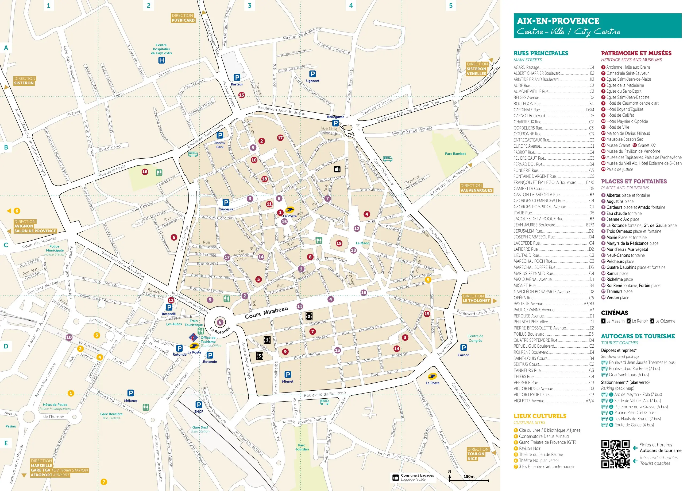
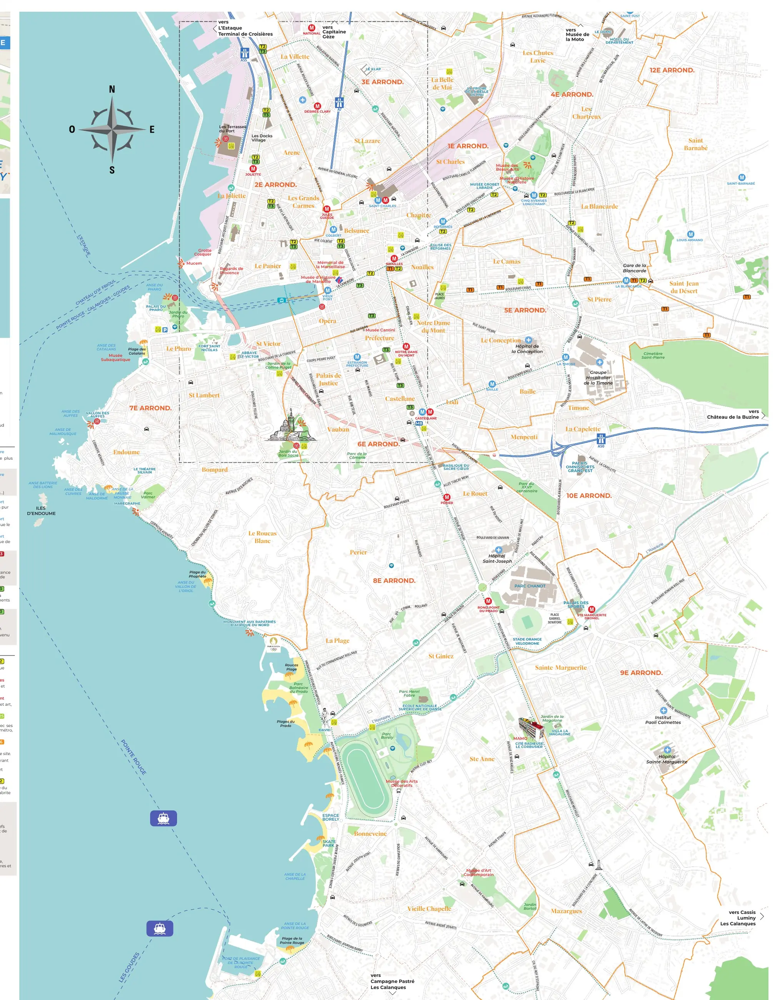
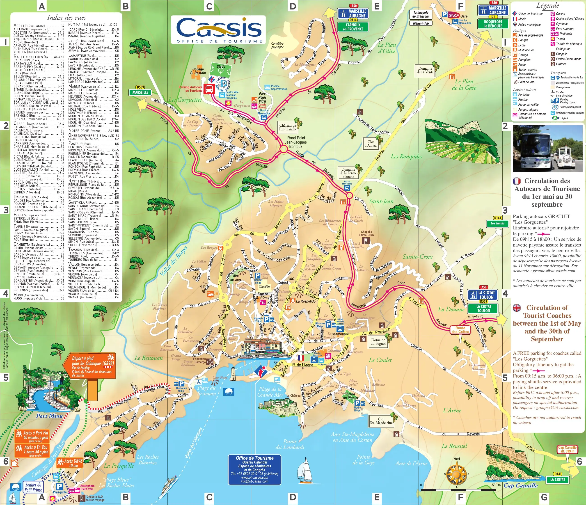

{kind=link}

Atelier des Lauves
폴 세잔이 생의 마지막 4년(1902–1906) 동안 매일 그림을 그렸던 언덕 위 아틀리에. 북향 채광창, 대형 캔버스용 벽 슬릿, 정물화에 등장했던 올리브 단지와 해골이 그대로 보존된 근대 미술의 성지.

Aix-en-Provence에서는 프로방스의 시장과 구시가지 생활, 그리고 Cézanne의 흔적을 중심으로 천천히 도시를 본다. Nice까지 이어졌던 해안 중심 일정에서 벗어나 내륙 프로방스의 일상으로 들어가는 첫 거점이기도 하다.
Aix 자체는 대부분 걸어서 보고, 하루는 Cassis의 항구와 Calanques를, 하루는 Marseille의 항구도시 풍경을 별도 일정으로 다녀온다. 도시 안에서는 장소의 수를 늘리기보다 시장에서 장을 보고, Vieil Aix와 Quartier Mazarin을 걷고, Cézanne이 작업했던 공간과 풍경을 연결하는 데 집중한다.
Aix에 머무는 날에는 차를 세워 두고 걸어 다니며, 당일치기 뒤에는 일정의 밀도를 더 높이지 않는다.
| 날짜 | 핵심 일정 |
|---|---|
| 9/10 목 | Verdon(Moustiers)에서 하산 · Route des Crêtes · Sainte-Croix · Valensole 경유 · Aix 체크인 |
| 9/11 금 | Marseille 당일치기 (TER 이동) |
| 9/12 토 | Aix 토요 대형시장(Richelme·Prêcheurs·Verdun) · Vieil Aix · Cézanne 아틀리에 · Musée Granet |
| 9/13 일 | Cassis · Calanques 당일치기 |
| 9/14 월 | Aix 체크아웃 · Lourmarin 점심 · Château de Lacoste · Gordes 2박 체크인 |
상세 시각, 이동, 식사, 주차와 대체 일정은 각 날짜의 Day 페이지에서 확인한다.
현지 관광안내소가 종이로 나눠 주는 지도다. 목적지를 찍어 찾아가는 지도가 아니라, 이 고장에서 무엇이 유명하고 서로 얼마나 떨어져 있는지를 한눈에 보여 주는 쪽이다. 눌러서 크게 열면 확대된다 — 인터넷이 끊겨도 열린다.

쿠르 미라보를 축으로 구시가(Vieil Aix)와 마자랭 지구가 어떻게 갈리는지 본다. 세잔의 아틀리에와 테르므 섹스티우스 같은 외곽 지점까지 같은 면에 들어와 있다.
저작권 · © Office de Tourisme d'Aix-en-Provence. All rights reserved. 권리자: Office de Tourisme d'Aix-en-Provence
공식 배포 파일에서 지도 면만 뽑아 해상도를 낮춰 비상업적 개인 여행 참고용으로 수록한다. 권리자·발행처·판본·원본 주소를 함께 표시하고, 요청이 있으면 내린다.

비외포르에서 노트르담 드 라 가르드 언덕까지, 파니에 지구와 뮤셈, 코르니슈를 거쳐 칼랑크까지가 한 장에 있다. 프리울 제도 인셋과 메트로·트램 노선도 같이 그려져 있다.
저작권 · © Office Métropolitain de Tourisme de Marseille. All rights reserved. 권리자: Office Métropolitain de Tourisme de Marseille
공식 배포 파일에서 지도 면만 뽑아 해상도를 낮춰 비상업적 개인 여행 참고용으로 수록한다. 권리자·발행처·판본·원본 주소를 함께 표시하고, 요청이 있으면 내린다.

삽화로 그린 조망도. 항구에서 각 칼랑크(포르미우·포르팽·앙보)까지 걸어가는 시간이 적혀 있다. 배로 갈지 걸을지를 이 지도 하나로 정할 수 있다.
저작권 · © Office de Tourisme (마르세유 관광청 호스팅). All rights reserved. 권리자: Office de Tourisme (마르세유 관광청 호스팅)
공식 배포 파일에서 지도 면만 뽑아 해상도를 낮춰 비상업적 개인 여행 참고용으로 수록한다. 권리자·발행처·판본·원본 주소를 함께 표시하고, 요청이 있으면 내린다.
폴 세잔이 생의 마지막 4년(1902–1906) 동안 매일 그림을 그렸던 언덕 위 아틀리에. 북향 채광창, 대형 캔버스용 벽 슬릿, 정물화에 등장했던 올리브 단지와 해골이 그대로 보존된 근대 미술의 성지.

마르세유와 카시스 사이에 걸쳐 20km에 걸쳐 펼쳐진 유럽 유일의 지중해 연안 국립공원. 에메랄드빛 바다로 수직 낙하하는 백색 석회암 피오르 협만들의 장관.

유럽 최고 높이의 해안 절벽 캅 카나유(Cap Canaille) 아래 자리한 아늑한 지중해 어항. 파스텔톤 가옥, 칼랑크 국립공원 유람선 출발지, 유서 깊은 카시스 화이트 와인(AOC Cassis)의 고향.

1651년 옛 성벽 자리에 조성된 440m의 플라타너스 가로수길. 북쪽의 활기찬 카페와 남쪽의 고요한 17세기 귀족 저택, 4개의 유서 깊은 분수가 관통하는 엑상프로방스의 심장.

Place Richelme에서 매일 아침 열리는 식품시장과 화·목·토 Places Comtales·Cours Mirabeau·Forbin·Hôtel de Ville로 확장되는 프로방스 시장.

로마 온천 도시 위에 17~18세기 프로방스 귀족 저택과 바로크 분수, 5세기 고대 세례당을 품은 생소뵈르 대성당이 어우러진 우아한 미로 구시가지.

폴 세잔이 20세부터 60세까지 40년간 머물며 화가로 성장했던 가문의 여름 저택. 살롱의 초기 벽화, 마로니에 가로수길, 분수 연못, 그리고 화가가 최초로 생트 빅투아르 산을 그렸던 역사적 현장.

엑상프로방스 건축물의 황금빛 사암을 공급하던 고대·중세 채석장. 직각으로 깎인 붉은 사암 절벽과 소나무 숲 사이에서 세잔이 큐비즘의 기하학적 구도를 태동시켰던 야외 작업장.

16세기 가죽 향장갑에서 출발해 500년 전통을 이어온 세계 향수 산업의 수도. 프라고나르(Fragonard) 유서 깊은 공장과 국제 향수 박물관이 자리한 프로방스 내륙 언덕 도시.

2,600년 역사를 품은 프랑스 제2의 도시이자 지중해 최대의 항만 도시. 엑상프로방스의 우아하고 정적인 학문 도시와 대비되는 거칠고 역동적인 지중해 다문화의 용광로.

기원전 600년 포카이아 그리스인들이 닻을 내린 2,600년 역사의 천연 항구. 노먼 포스터의 대형 거울 차양(L'Ombrière), 아침 어시장, 르 파니에와 뮈셈으로 이어지는 마르세유의 심장.

마르세유에서 가장 오래된 언덕 위 미로 마을. 파스텔톤 가옥, 감각적인 그라피티 벽화, 예술 공방, 그리고 17세기 옛 빈민 구제소 비에이 샤리테(Vieille Charité)를 품은 보헤미안 지구.

파리 외부에 설립된 프랑스 최초의 국립박물관. 건축가 루디 리치오티가 설계한 초고성능 레이스 콘크리트 외피(J4 빌딩)와 공중 보도교로 연결된 17세기 생장 요새가 바다 위에서 조화를 이루는 현대 건축의 걸작.

1660년 루이 14세가 마르세유 항구 입구에 지은 웅장한 해상 요새. 르네 왕의 탑, 지중해 식물원 정원, 바다와 구항구를 굽어보는 성벽 파노라마 테라스.

해발 154m 석회암 언덕 정상에 우뚝 선 마르세유의 상징. 뱃사람들이 '착한 어머니(La Bonne Mère)'라 부르는 11m 황금 성모상과 화려한 비잔틴 금빛 모자이크, 지중해와 도시 전체가 360도로 펼쳐지는 최고봉 파노라마.

폴 세잔이 생애 후반 매일 이젤을 펴고 생트 빅투아르 산을 그렸던 언덕 위 전망 터. 세라믹 복제 화판과 실제 거대한 석회암 암벽을 한 프레임에 겹쳐 보는 야외 관람의 정수.

옛 몰타 기사단 수도원에 자리한 프로방스 대표 미술관. 세잔의 유화 및 수채화, 엑상 출신 화가 그라네의 작품, 자코메티·피카소를 아우르는 장 플랑크 현대 미술 컬렉션의 보고.

1860년 쿠르 미라보 서쪽 입구에 세워진 지름 41m의 거대한 기념비적 분수. 엑상(정의), 마르세유(상업), 아비뇽(예술)을 바라보는 3대 여신상과 8마리의 청동 사자가 지키는 엑상프로방스의 관문.

샤갈이 20년 말년을 보내며 잠든 중세 성벽 요새 마을. 현대 미술의 성지 마그 재단 미술관(Fondation Maeght), 자코메티의 야외 안뜰, 미로의 미궁 조각 정원이 언덕 숲속에 어우러진 예술의 성소.

카시스 항구 앞 공인 부야베스 헌장 인증 레스토랑. 지중해 암초 생선 스튜와 카시스 화이트 와인의 정석.

1954년부터 리셸므 시장 앞을 지켜온 엑상프로방스 대표 살롱 드 테. 정통 칼리송(Calisson)과 아침 페이스트리.
프로방스 내륙과 연안의 식문화는 올리브유, 마늘, 허브, 제철 채소를 풍성하게 활용한다.
프로방스에서는 지역 로제 와인도 대표적인 식문화 요소다. 운전하는 날에는 마시지 않고 저녁 식사 때 선택한다.
Place Richelme 시장은 Aix에서 장보기의 기준점이다. 아침에 청과물, 치즈(chèvre), 빵 등을 구입해 숙소에서 아침이나 가벼운 점심 식사를 준비하기 좋다. 상세 정보는 Aix 시장 가이드에서 확인한다.
아침과 점심은 시장 식재료나 로컬 비스트로를 활용하고, 당일치기 일정에서는 이동 동선에 맞춰 가볍게 식사한다. 저녁은 숙소 인근에서 여유 있게 즐긴다.
확정 숙소는 Les Toits de Méjanes(Airbnb) · 2 Place Coimbra, entrée A, 6층. 4박(9/9 15:00 체크인 – 9/13 14:00 체크아웃). 구시가지는 걸어 다니고 차는 세워 둔다 — 시내일(9/10·9/12)에는 차를 움직이지 않는다.
Aix 체류의 거점은 구시가지 서쪽의 확정 숙소다. Vieil Aix와 Cours Mirabeau까지 걸어서 접근할 수 있어 시내 일정에는 차를 쓰지 않고, Cassis와 다음 Luberon 이동일에만 렌터카를 이용한다.
아침과 간단한 점심은 숙소에서 해결하고, 장보기는 Place Richelme 시장과 주변 상점을 이용한다. 도착 첫날에는 차량 진입과 주차 위치를 먼저 확인하고 이후 시내 일정 동안에는 차를 세워 두는 것을 기본으로 한다.
Aix 시내일에는 Rotonde–Cours Mirabeau–Parc Jourdan 방향을 30–40분 정도 가볍게 걷거나 뛴다. 장거리 당일치기가 있는 날에는 별도 운동을 넣지 않는다.
늦은 귀가 — 마르세유 당일치기(Day 15)는 TER 로 19:45 귀환이다. 막차 시각을 낮에 확인하고, 늦어지면 Vallon des Auffes 를 먼저 뺀다.
Day 12 Nice-Ville 역에서 09:00 렌터카를 인수해 Saint-Paul-de-Vence·Grasse 를 거쳐 A8 로 들어온다. 16:45 체크인 예정. 도착일 저녁에 야심을 부리지 않는다 — 로통드와 쿠르 미라보 첫 산책까지가 적당하다.
9.10(목) · Day 13 · Aix-en-ProvenceDay 16 08:30~09:00 체크아웃하고 차에 짐을 싣는다. Lourmarin에서 마을과 점심을 즐긴 뒤 Gordes 2박 거점으로 간다. Bonnieux·Lacoste는 체크인 시각에 여유가 있을 때만 들르며 트렁크 짐은 완전히 가린다.
9.14(월) · Day 17 · Aix · 남부 Luberon · GordesAix에서 예외적으로 버스를 탈 때만 사용
Day 15 Marseille의 60·83번 bus와 Metro M1에 사용
Day 15 왕복 기본안; 출발 전 실제 열차와 표를 확인
Vieil Aix, Cours Mirabeau, Quartier Mazarin과 주요 시장은 도보로 이동한다. 시내 일정에는 차를 움직이지 않고 숙소 주차장에 두는 것이 기본이다.
Cassis 당일치기에는 렌터카를 이용한다. 항구 중심부 주차가 혼잡하므로 외곽 주차장을 이용하고 도보나 셔틀로 이동한다.
Marseille 당일치기는 Aix-en-Provence역에서 TER 기차를 이용한다. 도심 운전과 주차 부담을 피하고 철도를 기본 이동 수단으로 삼는다.
체크아웃 후 렌터카로 이동한다. 이동 중 마을 주차가 잦으므로 수하물은 가림막으로 완전히 가려 외부 노출을 방지한다.
Aix 일정은 도보·렌터카 중심이다. 버스가 필요한 날에만 공식 페이지에서 해당 노선 PDF를 골라 보고, 오래된 개별 노선도를 미리 저장하지 않는다.